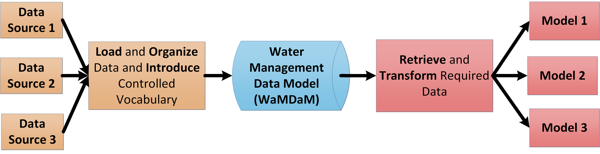
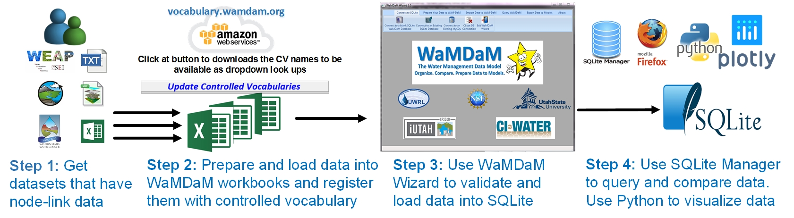

Welcome to the WaMDaM documentations¶
Overview¶
WaMDaM is both an information model and a couple of supporting software ecosystem. WaMDaM tools are designed to organize, identify, and compare multiple systems water management data in a single database.
Think of WaMDaM as a repository of water management data (blue cylinder) and a translator between numerous data sources on the left and different models on the right.
WaMDaM translates two aspects of the data: the syntax (i.e., structure) and semantics (terminology). WaMDaM intends to speed the time to find, organize, and synthesize data from different data sources, and prepare data for modeling. 
Workflow of using WaMDaM¶
These are the high level steps to use WaMDaM 
Getting Started¶
The Getting Started section guides you how to set up a WaMDaM Wizard and load your data into a SQLite database.
Application and use cases¶
Check out the use cases that demonstrate how WaMDaM enables systematic data query and comparisons across multiple different models and datasets
Information Model¶
- View primary documentation for the WaMDaM Information Model
Cross-platform implementations¶
Support for multiple RDBMS: MS SQL Server, MySQL, PostgreSQL, and SQLite
WaMDaM Controlled vocabulary¶
A Python/Django-based web application for managing the WaMDaM controlled vocabularies * Online submittal and moderation of new terms and changes to existing terms * Views of all existing vocabularies and terms * Application deployed at vocabulary.wamdam.org * https://github.com/WamdamProject/WaMDaM_ControlledVocabularies
WaMDaM Wizard¶
A Python-based Graphical User Interface to validate and load water management data mainly from an Excel Template into a SQLite WaMDaM compliant database.
* WaMDaM Wizard
By using the Wizard, users are not expected to understand the underlying WaMDaM database of schema. Users just need to understand how to fit their data into these concepts: ObjectType, Attribute, Instance, Network, and Scenario.

Feedback¶
Do you have feedback on WaMDaM? The Team would love to hear from you.
Let us know what interest you in WaMDaM in this Quick survey